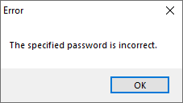

For RAR and WinRAR END USER LICENSE AGREEMENT (EULA) Click here
WinRAR Encryption Frequently asked question (FAQ)
- Which Encryption Technology Does WinRAR Use?
- How Does WinRAR Check a Password?
- What Happens If the Password is Incorrect?
- What is the "Encrypt File Names" Option?
- How Important is the Length Of The Password?
- What is a Good Password?
- Is it True That Cryptographic Keys Can Be Found in Virtual Memory?
- Does WinRAR Leave Artifacts in Temp Folders That Show Changes to the Archive and Files?
- Can the Contents of Encrypted Archives Be Guessed, Based on the Compression of Different File Types?
- How Does the Recovery Record Feature Work?
- How Much Should the Value of the Recovery Record Be?
- When is the Recovery Record Function Useful?
Which Encryption Technology Does WinRAR Use?
WinRAR Uses AES-256 Bit Encryption Technology
Two cryptographers, Vincent Rijmen and Joan Daemen, developed the Advanced Encryption Standard (AES) encryption algorithm, also known as the RijnDael cipher. In 2001 the U.S. National Institute of Standards and Technology (NIST) adopted AES as the industry standard for secure data encryption. This method is used worldwide in both hardware and software.
AES Encryption provides a higher level of security than previous encryption methods, such as DES (Data Encryption Standard), which was the standard encryption algorithm for many years and was widely used by both government institutions and banks.
A new encryption standard was developed to prevent “brute force” attacks, which had become relatively successful in cracking these older encryption algorithms.
Modern AES encryption uses 128 or 256-bit keys. The higher the number of bits in the key, the more possible key combinations there are and the harder the code is to crack.
AES-128 Bit: 340.282.366.920.938.463.463.374.607.431.768.211.456 possible key combinations
AES-256 Bit: 115.792.089.237.316.195.423.570.985.008.687.907.853.269.984.665.640. 564. 039. 457. 584.007.913.129.639.936 possible key combinations
Besides governmental institutions and organizations, WinRAR is used by the World Bank, United Nations and many other non-profit organizations.
How has WinRAR Encryption Algorithm improved with RAR 5.0?
- The password-based key derivation function is now based on (PBKDF2) using HMAC-SHA256; this is the core of the WinRAR security mechanism.
- A special password verification value detects wrong passwords without unpacking the entire file.
- If archive headers are not encrypted (“encrypt file names” option is disabled), file checksums for encrypted RAR 5.0 files are modified using a special password dependent algorithm. This prevents third parties from guessing file contents based on checksums.
How Does WinRAR Check a Password?
WinRAR does not check a password at all. Instead, it passes the password through the hash function and sets an AES-128/256 Bit encryption key; then uses this key to encrypt the file data. (only valid until RAR 4.x format).
Since the development of the RAR 5.0 format, WinRAR detects wrong passwords before starting extraction and does not extract garbage. RAR 5.0 stores a special password hash generated by a one-way hash function.
When a password is entered, RAR compares its hash to the stored hash; in case of no match, it rejects the wrong password early. This one-way hash function is intentionally slow and based on PBKDF2. This noticeably decreases the chances of a successful brute force attack.
What Happens If the Password is Incorrect?
If you enter a wrong password, WinRAR will notify you and you will be unable to open the archive.
- 
- Screenshot of RAR 5.x wrong password
What is the "Encrypt File Names" Option?
If you set the "Encrypt file names" option, WinRAR will not only encrypt the file data, but all other sensitive archive areas like file names, sizes, attributes, comments and other blocks. This provides a higher level of security.
If you want to prevent third parties from drawing conclusions about the content of the archives based on the meta files, you should enable this function. Without entering the correct password, it is impossible to even view the list of files that have been encrypted.
How Important is the Length Of The Password?
The length is crucial. However, we would recommend that you do not use words from dictionaries, combinations of words, or birthday dates. Even though they may be long passwords, it does not necessarily make them very safe.
The time cost of password exhaustive search attack in WinRAR:
| Character | Password Length | Time Cost of Attack WinRAR |
|---|---|---|
| (0-9) | 6 | 3.9s |
| (0-9,a-z) | 6 | 5.8h |
| (0-9,a-z,A-Z) | 6 | 152d |
| (0-9,a-z,A-Z) | 7 | 26.6y |
| (0-9,a-z,A-Z) | 8 | 1610,1y |
More information about exhaustive password search attacks and the security of key derivation functions, can be found in "Journal of Computers, Vol. 8, No. 9, September 2013 – The Security of Key Derivation Functions in WinRAR". Jie Chen, Jun Zhou, Kun Pan, Shuqiang Lin, Cuicui Zhao, Xiaochao Li.
WinRAR recommends using a password with at least 8+ characters for usual data. For sensitive data, at least 12+ characters. Please note that the maximum file encryption password length for RAR is 127 characters. Longer passwords are truncated to this length.
What is a Good Password?
A good password consists of a combination of letters, numbers, and special characters. It should have a minimum length of 8 characters. A combination of letters, numbers, and special characters is harder to guess since there are 30,000 times more possible combinations in comparison to an eight-character password that only uses lower-case letters.
Since it is hard to remember random alphanumeric passwords, we recommend abbreviating a sentence and turning it into a password. Use the words from the sentence and form a password.
Here are some examples by Bruce Schneier, security expert and CTO at Resilient,
https://www.schneier.com/blog/archives/2013/06/a_really_good_a.html
Note: Before we gave these examples, these passwords were secure:
WIw12,mbtmotr... = When I was twelve, my brother threw me off the roof..
Puh...thatiaus::ebay.ccoomm = Puh, that is an ugly sweater.
Ou@time-twtlg~! = Once upon a time there were three little girls.
bWGTE,TPw5:bwgte,tpwweresecure = Before we gave the examples these passwords were secure.
WinRAR also has a built-in password manager to help you keep track of your passwords.
Is it True That Cryptographic Keys Can Be Found in Virtual Memory?
This is a common issue with most software. Since the release of WinRAR 4.20, we have taken special measures to minimize the intermediate storage of plain text passwords in virtual memory. Unlike plain text passwords, encryption keys are indeed present in virtual memory during extraction, but cleaned once the extraction is complete. In order to do this, we do use a special Windows API function to encrypt plain text passwords and AES keys in memory, namely CryptProtectMemory by Microsoft.
https://msdn.microsoft.com/de-de/library/windows/desktop/aa380262(v=vs.85).aspx
Malicious actors would need full access to a user's computer to make a dump of WinRAR process memory and then extract keys from this dump. If somebody can make memory dumps of a user’s computer at any time and copy such dumps, the user already has a major security leak.
Please be aware the feature and scenario described above is only valid for Microsoft platforms.
Does WinRAR Leave Artifacts in Temp Folders That Show Changes to the Archive and Files?
Yes. If a user views archived files in other apps, WinRAR unpacks them to the temp folder in order to be able pass information onto the other apps.
WinRAR deletes these temp files on the following run, when they are at least 1 hour old. WinRAR cannot delete them immediately, because they may still be needed for an external app. If you do not want WinRAR to unpack files to the temp folder, you should not open the archived files in external apps while browsing an archive. You can unpack files to a folder manually, process them as you want and then manually delete the folder.
Can the Contents of Encrypted Archives Be Guessed, Based on the Compression of Different File Types?
In other words, can we guess the file format based on the compression ratio? For example, is there a worse compression rate for JPG and a better compression rate for TXT? If compression ratios are visible, you can also see the file format and file names. Users who have sensitive data can enable the “encrypt file names” option and hide both file names and ratios. Unlike many other archive formats, RAR allows users to encrypt not only file data, but also file headers and all meta files.
How Does the Recovery Record Feature Work?
In addition to the Encryption Feature, WinRAR‘s strength lies in the recovery of data in partially damaged archives. With the RAR 5.0 format, the Recovery Record is based on Reed-Solomon codes. This helps to increase the chance of data recovery significantly.
A recovery volume contains a certain sum of volumes, if you have a list of numbers, where one is missing, and you know the overall sum, you can reconstruct the missing number.
Imagine you have the numbers 25, 14, 77 and 41. You know that there is one number missing. The overall sum is 181. 25+14+77+41=157. The only number that adds up to 181 is 24.
If you had the 24 and the 77 was missing you would calculate as follows: 24+25+14+41=104. The number that would add up to 181 is 77.
This is the way that the recovery record enables WinRAR to find any missing number.
When you compress data, for example music files, into .rar files, you can choose to add the “Recovery Record” to the .rar archive. You can choose a value from 1 to 10 percent. The number indicates the percentage of the Recovery Record size of the archive. In the RAR 5.0 format, the recovery record can be as large as the archive itself. If you have multiple data damage, it could be less.
Using Recovery Record slightly increases the size of your .rar files, but it helps to recover data should your file become corrupted by a virus, bad disc, etc. The larger recovery record allows you to restore a bigger damaged area, but increases the size of the archive and the process is slower.
How Much Should the Value of the Recovery Record Be?
A value of 3-10% should to be enough. The higher the value the better the chance of recovering the damaged or missing part of the archive. However, the higher the value, the bigger the size of the archive. WinRAR sets the recovery record size to 3% by default.
When is the Recovery Record Function Useful?
The Recovery Record is particularly useful for long term backups. Optical media such as CD and DVD, flash memory like USB flash drives and magnetic storage like HDD, can develop bad blocks after long term storage. CDs and flash drives are even more prone to data errors than HDDs.
Adding 5 -10 % recovery record to backups intended for long term storage provides additional protection against such errors. Adding the recovery record does not guarantee successful recovery, but does significantly increase the chances of recovering damaged data.